先日 SWFOTO LS-80 を購入した話を書きましたが、今回は LS-85 を購入した話になります。自分にはこれは扱えないという話を以下に書きますが、あくまで体幹機能障害を持つ私だとこれを持ち歩くのは事実上不可能だとわかったという話なので、それを前提に読んでください。
LS-85 を組み立ててカメラに据え付けたのが下の画像です。そう、LS-80 と同じことをバッテリーグリップをつけた状態でやりたかったのです。
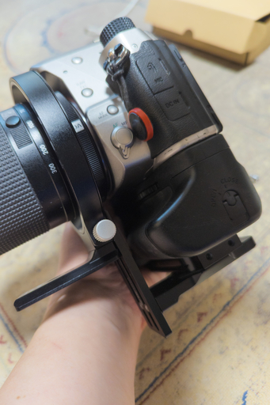それで LS-80 のときと同様に組み立ててバッテリーグリップの裏に取り付けたわけです。この画像を見てきちんとヤバみを感じることができるでしょうか。
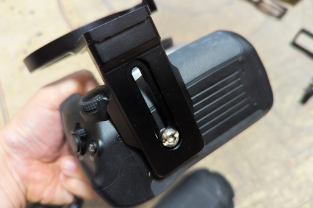もしお気づきでなければアングルを少し変えてもう 1 枚。
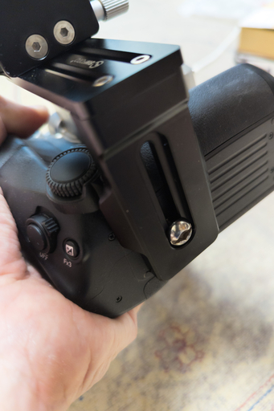それでも気が付かないとうあなたのために正面からもう 1 枚。
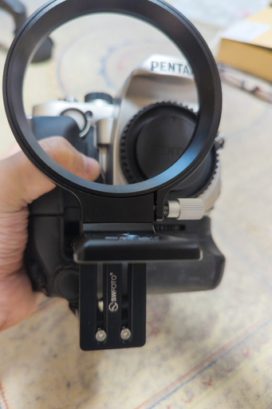そう。レンズマウントから横方向にずれとるのです。なんでこんなことになるのかというともう一度下の画像を見てください。
そう。PENTAX KP のバッテリーグリップの三脚穴ってマウントの真下にないんですよ。これはバッテリーグリップだけでの話でボディの三脚穴はマウント直下についています。
これは想定外でした。いやあらかじめこのようなことは想定して三脚穴の位置くらいはチェックしておくべきでした。見通しがあまかったと言わざるをえません。なお Nikon や Canon ではこのようなことはないそうです。
もしかすると LS-85 の破格の低価格 (私が購入したときで日本円で 3500 円。現在は 5500 円に)はこれが理由なのかもとも思っています。
PENTAX KP 用のバッテリーグリップのネジ穴がなぜこんなマウントからずれた位置にあるのか、その理由はバッテリーグリップだからです。なにを当たり前のことを、それでなんでそれが関係するのか、というツッコミをいただきそうな昨今ですが、みなさんいかがお過ごしでしょうか。
メーカーの設計者もバッテリーグリップの三脚穴をおそらくはマウント直下に置きたかっただろうなと思います。でもできないんですよ、それは。
マウントの真下にはバッテリーが入っています。当然三脚が自社のものとは限らないので、その三脚穴にバッテリーまで突き破る長い棒 (三脚のネジですけど) が突っ込まれないとは限らない。そうすると下手をするとバッテリーが手元で破裂して火を吹く可能性がある。
そんな位置に三脚穴を設置するという選択肢は普通に考えてないですよね。カメラボディの三脚穴だったらカメラが壊れるだけで済みますが、人が怪我をする可能性が否定できないのなら、そのような設計を良しとする理由はありません。
このまま LS-85 をお蔵入りさせるのはしのびないので、ちょっと工夫することにしました。LS-80 や LS-85 を導入することでお休みいただく予定だった L 字プレートが登場します。
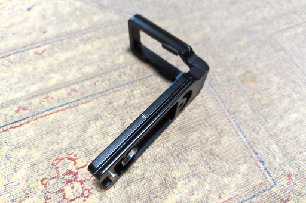なんや結局 L 字プレートを使うんかい、というツッコミも飛んできそうな昨今ですが、皆様いかがお過ごしでしょうか。酷暑の折ご健康で過ごされますようご自愛ください。
で L 字プレートの横っちょをみるとネジがあるので外せそうです。
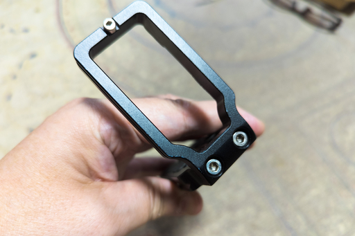 外しました。 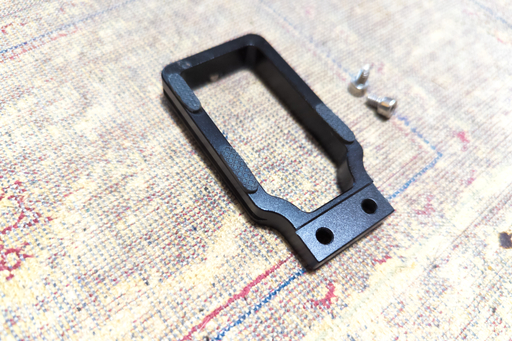L 字プレートの下のパーツはどこにいったのかとツッコミが…… (略) ……ここにあります。
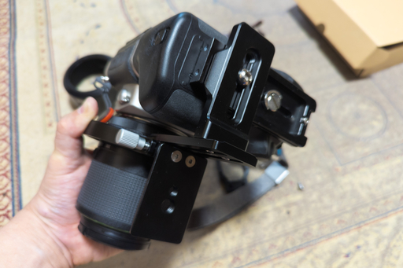え？わかりませんか？もうちょっとアップで。
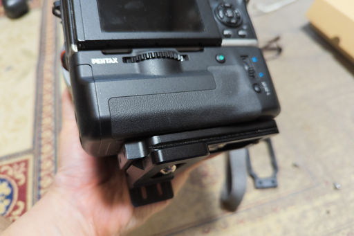え？まだわからない？じゃぁ正面から。
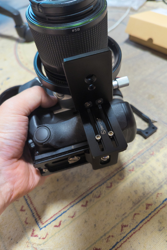L 字プレートから外した底のプレートを利用することで LS-85 の横方向の位置調整もできるようにしました。これで LS-85 をバッテリーグリップを取り付けた PENTAX KP でも使うことができます。
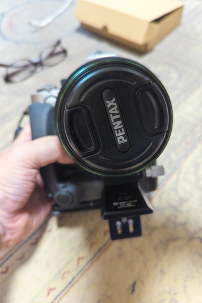組み立てている途中で気がついたのですが、三脚側のパーツを取り付ける際は下の画像のように親指かなにかで先端の方向に押しながらネジを締めないと、リングを回転させるときに引っかかってリングを回せなくなります。いや正確にいうと回せますが元の位置に戻せなくなります。
工作精度は LS-80 と変わらないはずなので LS-80 の組み立て時にこれをやらなくても問題がなかったのは偶然なのでしょう。
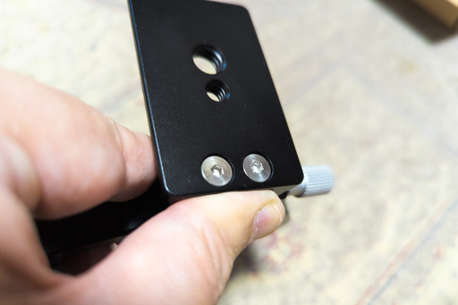それでこの日記を書くためにバッテリーグリップと LS-85 をつけた PENTAX KP を持っていろんなアングルで画像に収めたわけですが、そのときに嫌でも気がついてしまうことがありました。
重いんです。持っていてこれはダンベルか？と思うような重さです。筋トレに使えそうなくらいです。
ためしにキッチンスケールで重さを測ってみました。最初はバッテリーを入れない重さです。
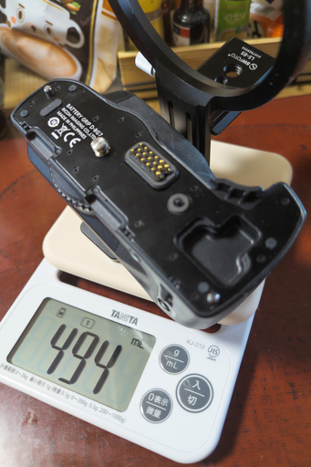495g でも笑えるのですがバッテリーを入れても測りました。
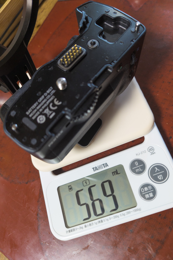機材の総重量になにかの冗談ではないかと思える重さが追加されます。これを担いで上高地を歩き回るのか？
現在の自分の状態では不可能と判断しました。LS-85 とバッテリーグリップはお留守番してもらうことにします。別の機会に活用しようと思います。